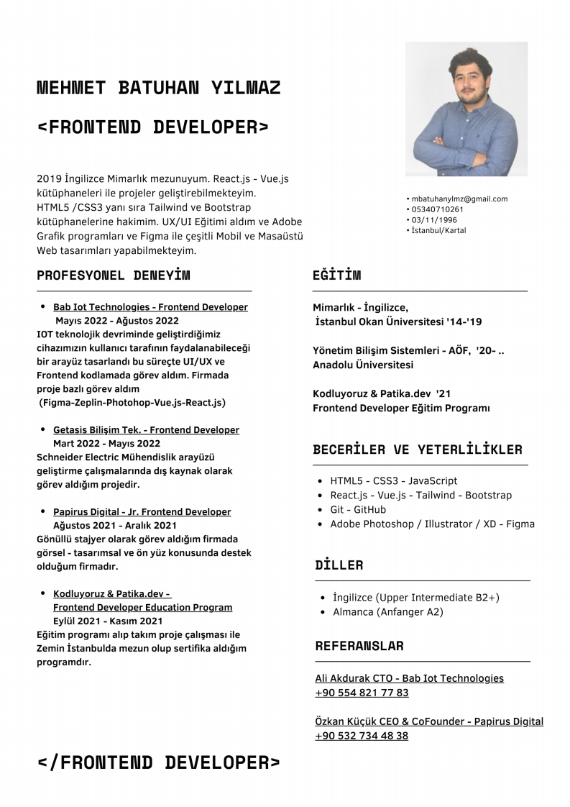

1<!DOCTYPE html>
<html>

<head>
    <meta charset="UTF-8">
    <!-- 引入样式 -->
    <link rel="stylesheet" href="style/style.css">

    <style type="text/css" media="print">
        .noprint {
            display: none
        }
        
        .print {
            display: block !important;
        }
    </style>
</head>

<body>
    <div id="app">
        

       
        <div class="main scrollbar noprint"  v-bind:style="{ height: mainHeight + 'px' }" v-bind:class="{ 'mainLeftM': ifMenuShow, 'aleft': textAlign === 'left','acenter': textAlign === 'center','aright': textAlign === 'right'}">
            <div class="conent" v-html="pageContent" v-bind:style="zoomStyle"></div>

            <div class="clear"></div>
        </div>

        <!--专门只为打印的内容-->
        <div class="conent print" style="display:none" v-html="pageContent"></div>
    </div>
</body>

<script src="js/vue.min.js"></script>
<script>

var app = new Vue({
        el: '#app',
        data: function() {
            return {
                // visible: false,
                isCollapse: false,
                currentNav: 0,
                activeName2: 'first',
                
                pageContent: '',
                asideHeight: 300,
                mainHeight: 300,
                ifMenuShow: true,
                zoomNum: '1.0',
                textAlign: 'left',
                zoomStyle: {},
                pageDatas: ['<div style="position:absolute;top:-0.000081px;left:0.000000px"><nobr></nobr></div>']
            }
        },
        mounted: function() {
            this.$nextTick(function() {
                this.pageNum = this.pageDatas.length;
                this.pageContent = this.pageDatas[0];

                this.setLeftMenuHeight();
            })
        },
     
        methods: {
            
            changeCurrentPage: function(methods) {
                switch (methods) {
                    case 'first':
                        this.currentPage = 1;
                        break;
                    case 'prev':
                        if (this.currentPage > 1) {
                            this.currentPage -= 1;
                        }
                        break;
                    case 'next':
                        if (this.currentPage < this.pageNum) {
                            this.currentPage += 1;
                        }
                        break;
                    case 'last':
                        this.currentPage = this.pageNum;
                        break;
                }
            },

            gotoPage: function(page) {
                console.log(page);
                this.currentPage = page;
            },
            modifyZoom: function(type) {
                switch (type) {
                    case 'in':
                        if (this.zoomNum < 2) {
                            // this.zoomNum = (this.zoomNum + 0.1).toFixed(1);
                            this.zoomNum = (parseFloat(this.zoomNum) + 0.1).toFixed(1);
                        }
                        break;
                    case 'out':
                        if (this.zoomNum > 0.5) {
                            this.zoomNum = (parseFloat(this.zoomNum) - 0.1).toFixed(1);
                        }
                        break;
                    default:
                        break;
                }
                console.log(this.zoomNum);
            },
            setLeftMenuHeight: function() {
                // this.asideHeight = document.body.scrollHeight - 60;
                this.mainHeight = document.documentElement.clientHeight - 60 - 20;
                // 60为头部导航高度， 46为menu高度， 40为上下padding
                this.asideHeight = this.mainHeight - 20 - 46;
            },
            changePage: function(page) {
                this.currentPage = page;
                // this.pageContent = this.pageDatas[page - 1];
            },
            changeLeftMenu: function() {
                this.ifMenuShow = !this.ifMenuShow;
            }
        }
    });

function gotoPage(page) {
    console.log(page);
    app.gotoPage(page);
}

</script>

</html>